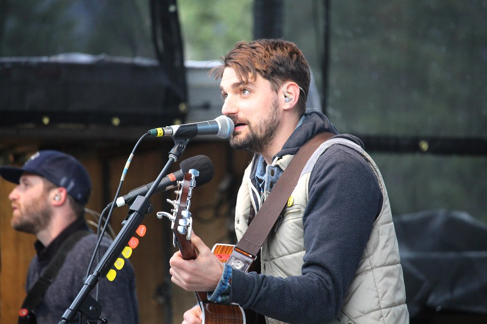

Tim Baker
Tim Baker was the frontman of the indie rock band Hey Rosetta!, up until their hiatus in 2017. Since 2019, he has consistently been releasing solo music. He's also my favourite musician the moment. I would go as far as saying he is one of Canada's best right now, and truly a criminally underrated talent. I've had the pleasure of seeing him live at the Bronson Centre back in December 2024 with my mum, and he put on a wonderful show.
In 2019, he released his debut solo album, and what I consider his magnum opus: Forever Overhead. This album contains some of his most memorable tunes, such "Dance", "All Hands", and "Spirit", though every song on the tracklist is phenomenal.
"Dance" is a beautifully intimate ballad in which Tim simply tells the song's recipient he would like to share a dance. The song takes its time to progress, starting slow and building up after the first chorus. Tim's lyrics are minimalist but full of emotion, perfectly capturing the emotions he intended to convey. After the final lyric, Tim takes a backseat, allowing the piano-driven instrumental to phase out for the last minute of the song. The music video for "Dance" is quite special to me as well; it was filmed at the Canadian Museum of Nature here in Ottawa, which is a place I visited a lot as a kid.
"All Hands" is arguably Tim's biggest anthem. It's a folky tune about his Newfie roots and celebrating the people in his life that made him who he is. The music video goes a step further, showing Tim back home in various spots singing and dancing with family, friends, and some of his former Hey Rosetta! bandmates. This was the first song I ever heard by Tim Baker, and largely thanks to the video and its wholesome nature, it endeared me to his music and made me a fan.
While my opinion constantly flip flops, I think "Spirit" has to be at least one of my favourite songs in Tim's discography. What I love most about the song is how it's structured; starting off with a conventional first verse and gradually building momentum, only to suddenly crescendo into something totally different, before returning to the original refrain by the end. Similar techniques are used on tracks such as "Strange River", and "Two Mirrors".
In 2024, Tim released Full Rainbow of Light, his third and currently most recent solo album. It is a Christmas album, comprised of mostly original music and a cover of the iconic "I'll Be Home For Christmas". Personal favourite songs of mine include the title track, "Full Rainbow", and "Light the Light", which is by far the most singable and danceable song on the record. "Light the Light" has a fun music video too, in which we see the booze-fueled antics of staff at an office Christmas party while Tim cameos as a DJ in the background. Better yet, he dropped a deluxe edition of Full Rainbow of Light in 2025 which includes three bonus songs. Since its initial release, this album has become my de facto soundtrack during the November to January stretch every year.
I honestly have nothing but positive things to say about Tim and his work. At the moment, the Full Rainbow deluxe edition is Tim's most recent release, and I look forward to whatever he gives us next. He does a great job keeping his fans fed with consistent new drops, be it an album, an EP, or a single. I can't wait for more music, and I hope to see him in concert again sometime soon.